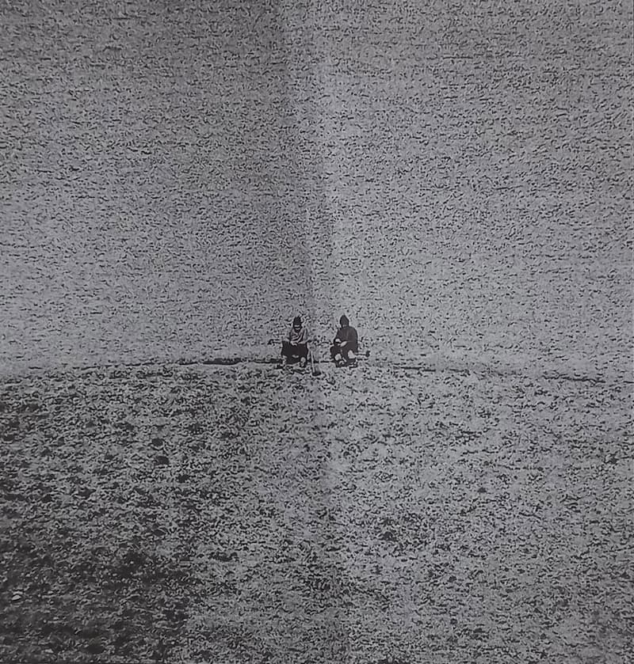

X.
Structura specifică a conștiinței religioase
Ați văzut că este imposibil să se stabilească caracterul special pentru credința religioasă, dacă plecăm de la cercetarea obiectului la care se aplică această cunoștință; și anume, pentru simplul motiv că o vedere de ansamblu asupra universului are și filosofia, pe de o parte; iar pe de altă parte, pentru că problema divinității cade nu numai în domeniul de cercetare al religiunii, ci și în cel al metafizicei, începusem însă să cercetăm alt domeniu, și încercasem să scoatem o altă orientare în cadrul căreia s-ar putea stabili caracterul specific al conștiinței religioase. Vă amintiți că vă atrăsesem atenția asupra faptului fundamental că determinarea personalității noastre începe propriu-zis cu chemarea la viață a substratului emoțional din personalitatea noastră psiho-fizică.
1. Cunoaștere și valorificare a personalității umane
Spuneam, anume, că primordial și de cea mai mare importanță pentru determinarea personalității umane este faptul că orice cunoștință din afară se raportează, totdeauna, la eul nostru ca entitate psiho-fizică cu ajutorul emoțiunii, sau are ca precipitat, dacă voiți, emoția. Aduceam aminte că materia de cunoaștere în general este dată nouă prin senzațiuni și că senzațiunile acestea capătă caracterul de aprobabile și dezaprobabile, devin prin urmare aprobabile sau demne de a fi înlăturate după felul în care ele se adaptează personalității noastre psiho-fizice sau nu se adaptează. Este evident că în procesul acesta de asimilare a senzațiunilor, este însuși procesul de cunoaștere. Evident că toate aceste senzațiuni devin prelucrate în conștiința noastră și că, cu ajutorul operațiunilor ceva mai radicale ale actelor în primul rând, și anume ale actului de cunoaștere în special, acest material este ridicat până la generalizările care sunt în genere considerate ca un fel de material al — hai să zicem — rațiunii.
Dar ceea ce este interesant în tot acest proces de cunoaștere pentru ceea ce urmărim noi aci este că elementul emoțional despre care vă vorbeam stă atașat la baza actului de cunoaștere; așa că, propriu-zis nu există cunoștință fără valorificare; orice cunoștință este o judecată de valoare. Mai precis, starea emoțională, actul emoțional nu întovărășește, ci conduce propriu-zis procesul de cunoaștere.
Această problemă, ceva mai largă, a cunoașterii, vă atrag atenția că a apărut pentru prima oară în filosofia religiei. Toată școala de la Baden, cu Ritschl, Windelband, Lask, chiar dacă acesta merge către un obiectivism, la urmă toată această școală nu face decât să reia problema pusă în filosofia religiei întâi, și anume problema pusă de Ritschl. Albrecht Ritschl este, prin urmare, întemeietorul ei, al așa-numitei filosofii a valorii, la modă până acum vreo 10 ani. Că este natural ca în domeniul filosofiei religiei să se pună mai întâi problema aceasta, este o constatare care stă la-ndemâna d-voastră. Întrebarea este: valorificare există în tot procesul de judecată? Dar însuși faptul acesta, al valorificării, este suficient pentru ca să determine actul de cunoaștere religioasă? Pentru că aceasta a fost prima afirmație pe care noi am început să o analizăm polemic aci, fără să o enunțăm. Schița pe care v-am făcut-o eu, de proces al cunoașterii, arată că această valorificare emoțională este un element general al cunoașterii, deci nu este specific cunoașterii religioase. Totuși, trebuie să facem câteva încercuiri. Anume, în considerarea științifică a realității, deci în procesul de cunoaștere științific, valorificarea aceasta, având ca origine un proces emoțional, există, dar ea este pusă în funcțiune de interesul pe care noi îl acordăm realității. În considerarea științifică a realității, accentul fundamental al interesului cade pe însăși această realitate, pe legăturile dintre diferitele fenomene, pe înfățișarea obiectivă a acestor realități. Valorificare sigură nu există, dar țelul valorificării acesteia este stabilirea de unitate, în cadrul realității obiective, în afară de noi. Pe câtă vreme în cunoștința filosofică, care nu este cunoștință religioasă, valorificarea aceasta capătă un nou sens; și anume, toată realitatea obiectivă nu există în considerațiunea filosofico-religioasă decât în funcțiune de anumite necesități interioare.
2. Cercetare științifică și atitudine filosofico-religioasă
Vasăzică, personalitatea umană care, în cazul cercetărilor științifice, mai mult sau mai puțin se pierde în fața realității, personalitatea acesta umană care-și subordonează vasăzică existența ei existenței obiective a realității, își cere drepturile ei speciale în considerațiunea filosofico-religioasă.
Și atunci, de unde valorificarea de origine emoțională este, în considerațiunea aceasta științifică, pendinte de țelurile științifice, ea nu mai este dependințe în cazul cel de-al doilea, ci valorificarea emoțională este însuși scopul conștiinței acesteia filosofico-religioase, pentru că în cadrul acestei preocupări filosofico-religioase personalitatea umană se plasează chiar în centrul realității acesteia și potrivit realității acesteia, după necesitățile ei. Deci, în acest al doilea caz, personalitatea generală psiho-fizică umană absoarbe într-însa întreaga realitate și devine ea unitate de măsură pentru realitatea aceasta. Vasăzică, conștiință valorificatoare și într-un caz și într-altul. Numai că, în cazul cercetării științifice, o conștiință valorificatoare dependentă, iar în cazul cel de-al doilea, o conștiință valorificatoare independentă; adică, valorificarea existențelor pentru ele însele, întrucât valorificările acestea sunt părți integrante din conștiința noastră filosofico-religioasă.
Cu observațiunea aceasta se face, precum vedeți, o separație deocamdată între domeniul cercetării științifice și domeniul cercetării filosofico-religioase. Dar încă nu avem propriu-zis o deosebire sau un caracter științific al cunoștinței religioase ca atare. Acest caracter specific cred că-l putem căpăta dacă facem un pas mai departe și dacă analizăm anume care este atitudinea, care este punctul de ajungere al procesului de cunoaștere.
Știți aproximativ, din considerațiunile pe care le-am făcut, ce însemnează atitudine religioasă. Atitudine religioasă însemnează interpretarea existenței după necesitățile noastre — prima problemă —; iar a doua, punerea acestei existențe în acord cu noi înșine cu ajutorul unui element extramundan; cu alte cuvinte, considerarea religioasă a realității însemnează punerea și rezolvarea problemei mântuirii.
3. Echilibrul spiritual. Stăpânire, trăire și mântuire filosofică
O explicație. Pricina sufletească sau originea actului religios stă în neliniștea conștiinței umane. O conștiință umană într-un perfect echilibru n-are nevoie de act religios, poate să trăiască perfect închisă în ea însăși. Ea n-are probleme de rezolvat. O problemă de rezolvat nu există decât într-un domeniu în care echilibrul spiritual este rupt. Ruperea echilibrului acesta spiritual pune imediat necesitatea restabilirii acestui echilibru și considerarea religioasă, trăirea religioasă a existenței cere tocmai o cale de ajungere; și considerarea filosofică a existenței este tot o cale de ajungere la rezolvarea acestei probleme, numai că este o deosebire: a stăpâni filosoficește existența sau, cu alte cuvinte, a te stăpâni pe tine însuți, a stabili între forțele tale spirituale un echilibru stabil, însă în ultimă analiză, a te ridica deasupra întregii existențe, a avea conștiință de caducitatea întregii existențe, față de perenitatea spiritualității tale, a te ridica, prin urmare, printr-o disciplină spirituală specială, a ridica viața ta spirituală deasupra existenței economice, însemnează a stăpâni pur și simplu existența, adică însemnează a avea puterea să o afirmi sau să o negi. Aceasta însemnează propriu-zis a stăpâni. Stăpânim un lucru când putem să-l afirmăm sau să-l negăm. Adică, cum afirmăm sau negăm? Când putem să ni-l apropriem, să-l facem folositor pentru noi, sau să trăim fără el. Într-un înțeles mai restrâns, a nega un lucru însemnează a-l distruge pur și simplu, în înțelesul acesta mai larg, filosofic, când ceea ce se pune față în față este conștiința umană și însuși cosmosul, fără ideea de divinitate, atunci a nega însemnează a putea să trăiești ignorând toate necesitățile tale care sunt condiționate de cosmos. De aceea există o salvare, o mântuire filosofică. O astfel de mântuire filosofică o găsiți realizată în Spinoza. Tot așa mântuirea filosofică o găsiți realizată în Goethe. Forma de echilibru spiritual realizată de personalitățile acestea — imensă, fără pereche în toată istoria culturii omenești, a lui Goethe — este tocmai o stăpânire a cosmosului fără ajutorul divinității; și, în genere, toate religiile care, pornind de la un punct de vedere panteist, alunecă înspre o filosofie pur și simplu panteistă, toate aceste religii sau toate aceste formule sunt formule de rezolvare filosofică a problemei mântuirii. Problema lui Faust e foarte simplă: concluzia la care trebuie să ajungă Faust, dacă este vorba să ajungă în stăpânirea formulei fericirei, este: omul își este suficient lui însuși, omul poate să trăiască singur, împăcat cu el însuși. Iată un fel de rezolvare a problemei mântuirii, felul filosofic. Felul acesta de rezolvare a problemei este foarte bun pentru unele temperamente; pentru alte temperamente, care iscodesc, care iau filosofia în serios și care cer filosofiei prin urmare să dovedească toate lucrurile pe care le afirmă — pentru că aceasta este filosofia, o interpretare a realității și o trăire a realității pe bază de dialectică rațională —, vasăzică, oamenii care iau în serios filosofia — și caută să o cerceteze în instrumentele ei și în pretențiile și în fundările ei — ajung la o vreme la concluzia că panteismul acesta filosofic nu se ține în picioare. Despre lucrul acesta poate că vom avea prilejul să vorbim mai târziu, căci propriu-zis analiza problemelor acestea cade în domeniul metafizicei.

4. Soluția religioasă a mântuirii
Vasăzică, soluția panteistă nu este o soluție definitivă; și atunci, problema aceasta a mântuirii, pe care o înfățișarăm noi în limite mari, își mai găsește o altă soluție, și anume soluția religioasă, în ce constă soluțiunea religioasă?
Problema, precum am spus, este de a se împăca cosmosul cu omul. Aceste două elemente, puse față în față, care se destramă și se sfârtecă unul pe altul, trebuiesc puse de acord: existența cosmosului nu mă împacă sau existența mea nu se împacă cu cosmosul. Conflictul acesta, pe care ați văzut cum îl rezolvă filosofia, se rezolvă în religie, se rezolvă cu ajutorul intervenției divinității; deci, soluția religioasă a problemei salvării este împăcarea personalității umane cu existența cu ajutorul lui Dumnezeu. Și atunci, în domeniul conștiinței, calea pe care o urmează procesul acesta de împăcare stă la-ndemâna d-voastră, o cunoașteți adică imediat: este procesul religios, cunoașterea — emit, stabilesc sau statornicesc anumite judecăți de valoare. Orice cunoaștere conține o judecată de valoare, am spus-o. Al doilea, aceste judecăți de valoare sunt întotdeauna de sine stătătoare.
Am spus, în al doilea rând, că considerațiunea filosofico-religioasă a realității este o valorificare independentă; și, în fine, în al treilea rând, punerea mea în acord cu universul și cu judecățile acestea de valori de sine stătătoare, emise de personalitatea umană, sunt întotdeauna raportate la divinitate. Aceste trei elemente sunt suficiente pentru a deosebi conștiința științifică, conștiința filosofică și conștiința religioasă.
Vedeți, prin urmare, că obiectul nu era determinant pentru deosebirile acestea și vedeți acum că structura conștiinței este determinantă, adică scheletul propriu-zis, scheletul procesului de cunoaștere dă câteva elemente care sunt hotărâtoare, specifice pentru valorificările conștiinței.
Cred că definițiunea aceasta caracteristică — căci, vă repet, cunoaștere religioasă înseamnă emitere de judecăți de valoare independente, raportate la divinitate —, cred că această caracteristică este suficientă pentru a caracteriza conștiința religioasă ca atare.
Ar urma să vedem care este mecanismul acestei cunoașteri. Dacă, de pildă, să zicem, cunoștința științifică întrebuințează conceptul de cauzalitate, în adevăr acest concept de cauzalitate are o funcțiune precisă și identică în jurul conștiinței religioase sau nu?
Vasăzică, aceasta ar fi problema care se pune acum. Structura aceasta a conștiinței religioase o cunoaștem. Ar trebui să urmărim momentele acestei structuri, amănuntele acestei structuri, etapele în care această conștiință înaintează.
5. Digresiune, Hegel și Feuerbach
Mai înainte însă de a trece la această problemă, aș vrea să fac o digresiune. Hegel reduce oarecum toată existența reală la un fel de activitate a spiritului în general. El crede că chiar activitatea noastră religioasă nu este decât tot un fel de realizare a acestei vieți a spiritului. Potrivit părerii acesteia, unii dintre hegelienii de stânga au spus odată că această afirmație nu poate să fie primită decât cu anumite îngrădiri. Și anume, el zice că activitatea religioasă nu este propriu-zis o activitate de realizare a spiritului, ci că activitatea religioasă pornește oarecum din substratul emoțional al vieții noastre și corespunde unei necesități, unei dorințe sau unei tendințe, unor tendințe ale vieții noastre afective.[1] Dar aceasta nu este tocmai așa de neîndreptățit, cum pare la prima vedere sau cum, în fine, a fost întâmpinată în istoria literaturii filosofico-religioase. Eu vă amintesc lucrul acesta mai de departe, pentru că am impresiunea că lucrurile pe care le-am spus eu aci, în fața d-voastră, au provocat la unii dintre d-voastră oarecare nedumerire. D-voastră știți ce este un curs de filosofie și cum trebuie el făcut. Eu însă am părerile mele, astfel încât rup câteodată linia aceasta a cursului de filosofie făcut după toate rețetele și legile stabilite de demult, ca să stau mai aproape de d-voastră și să mă interesez de ceea ce vă interesează pe d-voastră., nu pe mine. Mi se pare că cele spuse de mine în lecțiunea trecută au produs, la unii dintre d-voastră, oarecare nedumeriri, care sunt în legătură — o să vedeți imediat — cu introducerea aceasta, cu Hegel și cu Feuerbach.
Părerea pe care am emis-o, pe care am desfășurat-o în ultimele două lecțiuni consecutive, este că, la urma urmelor, activitatea religioasă este o activitate individuală, în afară de constrângerea socială, că ea se sprijină tocmai pe cealaltă părere, că activitatea religioasă corespunde unei necesități strict personale. Că nu este propriu-zis rațiunea obiectivă care realizează, în sens hegelian, viața religioasă, ci că sunt necesități unice și individualizate ale personalității umane în genere, necesități care închid o mare parte de viață emotivă, emoțională activă, care determină această activitate.
Contra lui Feuerbach s-a făcut obiecțiunea că atunci toată activitatea religioasă ar fi activitate egoistă și poate că și unele din concluziunile pe care d-voastră le-ați tras din lecția trecută au fost în acest sens.
6. Egoism și altruism
Dacă în adevăr nu există nici o legătură necesară între diferiți indivizi în actul religios și prin viața religioasă, atunci nu cumva această activitate este în adevăr egoistă? Egoismul și altruismul sunt forme, fără îndoială, opuse; dar opozițiunea aceasta nu este necesară. Puteți să spuneți: unele acțiuni individuale care nu au în vedere pe ceilalți, nefiind acțiuni altruiste, sunt funciarmente egoiste; aceasta însă nu înseamnă că aveți în totul dreptate. Căci individualului i se opune socialul. Dar între individual și social mai există o pozițiune, și anume există asocialul. Adică, între egoism și altruism nu există nici o pozițiune intermediară, și dacă d-voastră considerați activitatea socială ca o pozițiune, ca o activitate altruistă, atunci considerați activitatea individuală ca o activitate egoistă. Dar stabilirea aceasta de corelațiune nu este exactă, nu este îndreptățită, pentru simplul motiv că dincolo mai există și pozițiunea aceea asocială. Asocial înseamnă: nu mă interesez de ceilalți. Egoist înseamnă altceva, înseamnă: valorificarea existenței celorlalți pentru mine. Propriu-zis activitate egoistă și activitate altruistă înseamnă cam următorul lucru: activitate altruistă sau acțiune altruistă este o acțiune al cărei rezultat privește pe mai mulți, al cărei rezultat se răsfrânge asupra mai multora, al cărei rezultat este dorit de mai mulți. O acțiune egoistă este o acțiune al cărei rezultat este dorit numai de mine.
Caracterizarea aceasta este destul de largă ca să cuprindă cazuri ceva mai neprecise. Știți că La Rochefoucauld a zis că toate acțiunile noastre sunt egoiste și a avut destulă dialectică și sofistică ca să impună în timp această vedere. Chiar încercarea mea de a separa acțiunile egoiste de cele altruiste verifică o mulțime de alte cazuri. Presupuneți că sunt un om extraordinar de mare și că de existența mea depinde existența unei țări sau a unei întregi stări de lucruri. Acțiunea pe care aș face-o pentru conservarea mea nu ar fi egoistă, ci ar fi altruistă, pentru simplul motiv că acțiunea mea ar interesa, în afară de mine, pe o mulțime de alți oameni. Vasăzică, egoism sau altruism înseamnă acțiune cu rezultat pentru mai mulți sau acțiune cu rezultat pentru unul singur.
În actul religios, lucrurile nu se petrec așa. Acțiunea pe care o fac eu propriu-zis are un interes extramundan și o răsfrângere personală.
Întrucât acum rezultatul acestei acțiuni interesează pe unul sau pe celălalt? Evident, mă interesează pe mine personal, dar face rău cuiva? În al doilea rând, se face bine cuiva? Problema egoismului și a altruismului în actul religios nu este o problemă care să atingă însuși mersul chestiunii. Actele pe care le facem noi sub influența actului religios, sub influența vieții religioase, devin altruiste sau, hai să zicem, egoiste, numai în al doilea rând.
7. Caracterul individual al actului religios și altruismul
Ce este nelămurit în toată problema aceasta? Cum se face că nu există religie care să nu recomande să trăiești bine cu lumea cealaltă, să faci bine peste tot? Adică, cum se face că nu există religie care să nu emită concepte de altruism pentru activitatea ta? Cu alte cuvinte, dacă actul religios nu privește decât pe individ, cum se face că activitatea individului din viața religioasă este binefacere pentru ceilalți? Aceasta este problema precisă pe care vreau să o pun în fața d-voastră. Nu cumva, zic ceilalți, este de esența actului religios ca el să aducă după sine acțiunea altruistă? Și dacă este adevărată esența aceasta a actului religios, atunci nu cumva în adevăr acest act religios este condiționat social, este un act care să presupună întreaga societate stând la spate și beneficiind de actul acesta religios? Dacă da, atunci tot ce am spus ieri și alaltăieri, în cele două lecții precedente, n-are nici o valoare. Vasăzică, indirect, pe altă cale, eu atac problema care pentru unii dintre d-voastră a format un sâmbure de nelămurire.
O acțiune are două sensuri: sensul fundamental, pentru care este făcută, și are sensul întâmplător, pe care-l capătă din mediul ambiant. De pildă, eu plec de aci să mă duc la cafenea. Aceasta este acțiunea. Este în București un om care, de câte ori mă vede, i se face rău, să presupunem, în drum spre cafenea, la un colț de stradă, îmi iese înainte omul acela. Eu nu l-am văzut și nici nu bănuiam că am să-l întâlnesc, căci în cazul acesta poate că ocoleam pe altă stradă, ca să nu-i vie rău. El mă vede și îi vine rău. Acțiunea mea poate să fie interpretată în două feluri. Poate să fie interpretată fără ca eu să țin seama de ce a provocat mersul meu la cafenea, dar poate să fie interpretată și în sensul celălalt, fără să țin seama de ducerea mea la cafenea. Dacă eu zic: m-am dus la cafenea, am făcut o acțiune inofensivă. Dacă eu zic însă: dacă mă duc la cafenea, fac pe unul să înverzească, atunci acțiunea mea nu mai este inofensivă. Ei bine, aci este întrebarea: cum judecăm noi propriu-zis acțiunea noastră? Dacă eu, în acțiunile mele, sunt determinat de toate ambianțele, atunci este evident că acțiunea mea este sub înrâurirea societății și acțiunea mea are răsfrângere asupra societății, societatea este un element care intră în socotelile, în determinările, în hotărârile mele. Dacă eu nu țin seama însă de acest element, atunci evident că pe mine mă hotărăsc numai necesitățile mele personale. Dacă eu zic: mă duc pur și simplu la cafenea să beau un ceai, fac o acțiune socială? Nu. Fac o acțiune antisocială? Nu. Interesul social lipsește cu desăvârșire. Mă duc să cumpăr un kilogram de mere ca să le mănânc. Este social sau antisocial? Nu este nici social, nici antisocial; lipsește elementul de social. Și atunci eu zic: acțiunea aceasta este asocială.
Același lucru se întâmplă în actul religios. Raporturile mele cu divinitatea și toate actele pe care le fac eu în vederea stabilirii acestor raporturi cu divinitatea sunt acte care nu privesc pur și simplu societatea, ci sunt afacere personală a mea. Că ele, într-un fel sau altul, se pot răsfrânge asupra societății, este adevărat, dar numai întru atât ar fi actul meu determinat de elementul social, întru cât hotărâtor pentru drumul urmat de acțiunea mea ar fi tocmai momentul acesta social.
8. Caracterul asocial al ascetismului
Acum, evident că cele mai multe religii au această contrafață morală; adică, actele pe care le face un om cu viață religioasă nu sunt acte împotriva societății. Dar aceasta este pur și simplu o anexă a actului religios, nu este actul religios. În momentul în care eu nu voi mai considera cu necesitate, ca strict necesară, decât legătura mea cu divinitatea și mă dezinteresez de efectele sociale ale actelor mele, în momentul acela încetez să fiu religios? Nu. Și probă că este așa, spuneam că cea mai înaltă treaptă de viață religioasă o reprezintă, în general, ascetismul. Care este influența ascetismului asupra societății? Nulă; nici măcar ca exemplu nu lucrează ascetul asupra societății, pentru simplul motiv că el este ignorat de cele mai multe ori. Credeți d-voastră că astăzi nu există în omenire asceți? Credeți că nu există asceți în Țara Românească? Sigur că trebuie să existe. Și totuși, nu-i știe nimeni. Trăiesc ei viața religioasă sau nu? Desigur că o trăiesc. Această activitate a lor este socială sau antisocială? Nici una, nici alta; este, pur și simplu, asocială.
9. Iubirea ca lege normativă și ca lege naturală
Dar, spuneți d-voastră: foarte bine, dar atunci cum se explică faptul că uneori ai lăsat să se înțeleagă că o anumită solidaritate este absolut necesară (solidaritate spirituală) în viața socială? Nu am spus niciodată lucrul acesta. (Vă spun lucrurile acestea, pentru că observația mi s-a făcut de către cineva; nu am spus eu aceasta, poate că s-a iscat în capul altcuiva.) Eu am spus numai că, din punct de vedere al catolicismului, solidaritatea credincioșilor este absolut necesară. Eu am spus numai că comunitatea de iubire este propriu-zis condițiunea sine qua non a vieții religioase, în cadrul catolicismului. Aceasta am spus-o. Dar nu am spus că solidaritatea de iubire este o condițiune sine qua non a vieții religioase, pentru motivul pe care vi l-am spus și astăzi. Nu puteam să spun lucrul acesta încă pentru un alt motiv, și anume, pentru acela că, după impresiunea mea, iubirea nu este în creștinism o normă și nu poate să fie o normă, ci iubirea este o lege naturală, care lege naturală nu este scoasă din cadrul vieții religioase. Când eu spun: pământul se învârtește în jurul axei sale în 24 de ore, constat ceea ce se întâmplă. Eu nu pot să spun: pământul se va învârti de aci înainte în jurul său în 24 de ore. Aceasta este o lege naturală. Când eu spun însă: de aci înainte, toată lumea de aci o să iasă pe ușa cutare, și nu pe ușa cutare, aceasta este o lege pe care o fac eu, o hotărâre pe care o iau eu.
10. «Iubește pe aproapele tău…» — adică: vino-ți în fire!
Religia vine și spune: „Iubește pe aproapele tău ca pe tine însuți“. Aceasta înseamnă să iubești. Dacă vrei să fii mântuit, să iubești pe aproapele tău ca pe tine însuți, căci mântuirea ta este condiționată de iubirea de aproape, atunci condițiunea aceasta este esența și fundamentul mântuirii. Una este o interpretare, alta este cealaltă. „Iubește pe aproapele tău ca pe tine însuți“ înseamnă, pur și simplu: urmează legea naturală, așa este normal să se întâmple. Nu este vorba de ceva pe care ți-l impun eu, ci este ceva pe care eu vin să-l descopăr în tine. Structura conștiinței umane în genere închide într-însa această lege generală a iubirii. Această lege generală a iubirii poate să fie oprită în exercitarea ei de anumite accidente, după cum ieșirea pe cutare ușă poate să fie oprită prin închiderea ușii, pur și simplu. Când zici, deci: „Iubește pe aproapele tău…“, aceasta însemnează, pur și simplu: vino-ți în fire! În cazul acesta, însă, comunitatea de iubire provocată de mine nu mai este condițiunea esențială a mântuirii, ci este un fapt care se întâmplă pur și simplu. Vasăzică, nu este vorba de norma propriu-zisă, ci este vorba de descoperirea unei realități, de reîntronarea conștiinței umane, de reîntoarcerea ei în funcțiunile ei normale. Iar comunitatea aceasta de iubire este un fapt natural, care poate să coexiste cu problema mântuirii, dar care nu este condițiunea sine qua non, adică nu are legătură directă cu mântuirea, după cum nici învârtirea pământului în jurul axei sale nu are legătură directă cu mântuirea.
Vasăzică, caracterul acesta de lege normativă și lege naturală este hotărâtor pentru înțelegerea problemei pe care o puneam eu în ultimele două lecțiuni, și anume, înțelegerea faptului acesta, dacă în adevăr actul religios este un act social sau un act individual.
Lecțiunea de astăzi a fost — de altfel, ca și cea trecută — cam dezorganizată. Aceasta însă din vina d-voastră. Ceea ce vreau să rețineți, însă, din lecțiunea de azi — în afară de această digresiune, care este un răspuns la nedumeririle d-voastre — este următorul lucru: există posibilitatea de a determina structura specifică a actului religios.
Rămâne să vedem, în lecțiunea viitoare, care sunt elementele cu care lucrează această conștiință religioasă.
CE CITEȘTI ÎN AXA – POȚI DUCE CU TINE!
Comentarii